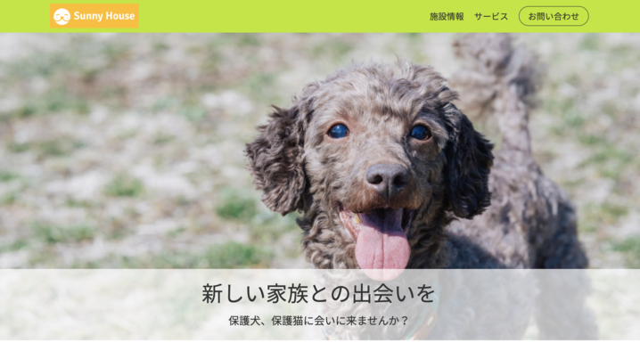
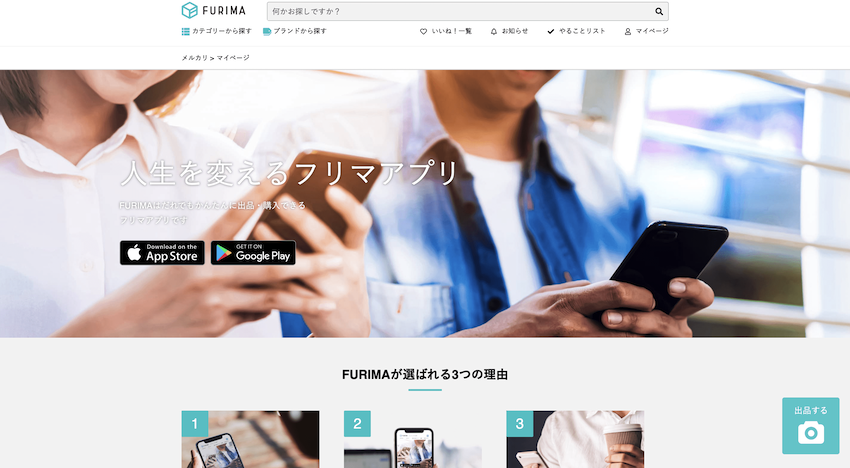

ABOUT ME
はじめまして！ fumioといいます。
【経歴】
・千葉大学教育学部 小学校教員養成課程卒業
・千葉県四街道市役所勤務（広報担当）。2019年12月に退職
・プログラミングスクールTECH::CAMPへ（2020年3月卒業）
・フロントエンド・マークアップエンジニアを目指して学習・就活中
【特技】
・人にわかりやすく教えること
・チームマネジメント
前職で4人の新規採用職員の指導や係の管理業務を経験してきました。
また、プログラミングスクールの同期からも、教え方やチーム開発のスクラムマスターとしての働きを評価してもらっています。
【目指すエンジニア像】
前職の広報担当の経験を活かし、クライアントや設計者との対話を大切にしながら、その思いを形にしてユーザーに届けることができるエンジニアを目指しています。
【経歴】
・千葉大学教育学部 小学校教員養成課程卒業
・千葉県四街道市役所勤務（広報担当）。2019年12月に退職
・プログラミングスクールTECH::CAMPへ（2020年3月卒業）
・フロントエンド・マークアップエンジニアを目指して学習・就活中
【特技】
・人にわかりやすく教えること
・チームマネジメント
前職で4人の新規採用職員の指導や係の管理業務を経験してきました。
また、プログラミングスクールの同期からも、教え方やチーム開発のスクラムマスターとしての働きを評価してもらっています。
【目指すエンジニア像】
前職の広報担当の経験を活かし、クライアントや設計者との対話を大切にしながら、その思いを形にしてユーザーに届けることができるエンジニアを目指しています。
WORKS
プログラミングスクールでの制作物と個人アプリです。
現在はフロントエンドの技術を高めるために、サイト作成などにも挑戦中です！
（これらのアプリはレスポンシブデザイン未対応なので、パソコンでご覧ください）
現在はフロントエンドの技術を高めるために、サイト作成などにも挑戦中です！
（これらのアプリはレスポンシブデザイン未対応なので、パソコンでご覧ください）
Thanks Journey
日々の感謝を記録するためのメモアプリです。
初めての個人アプリとして開発しました。
【使用技術】
Haml / Sass / Ruby on Rails / jQuery / MySQL
初めての個人アプリとして開発しました。
【使用技術】
Haml / Sass / Ruby on Rails / jQuery / MySQL
Link

FURIMA
スクールでチーム開発したフリマアプリです。
私はスクラムマスターとして開発に携わりました。
【使用技術】
Haml / Sass / Ruby on Rails / jQuery / MySQL
私はスクラムマスターとして開発に携わりました。
【使用技術】
Haml / Sass / Ruby on Rails / jQuery / MySQL
Link

ChatSpace
スクールで開発したチャットアプリです。
jQueryのAjax通信などを行いました。
【使用技術】
Haml / Sass / Ruby on Rails / jQuery / MySQL
jQueryのAjax通信などを行いました。
【使用技術】
Haml / Sass / Ruby on Rails / jQuery / MySQL
Link
MY FAVORITE
オリジナルアプリ「Thanks Journey」を紹介します！

URL：
https://thanks-journey.herokuapp.com/
テーマ：
日々の生活の中の感謝を記録していくアプリ
作った目的：
初めての個人アプリで、「せっかく作るなら人を幸せにするアプリを作りたい」と考えて作成しました。
現代では、SNSなどでバッシングや過剰な批判などの否定的な情報を多く目にするため、肯定的な考えや幸福感を持ちづらいのではないかと思います。
そこで、自分の身の回りの感謝を記録することで物事を肯定的に捉える習慣をつけ、ユーザーが幸福感を持つ機会を増やしてほしい、という思いを込めています。
機能紹介：
・トップ画面でユーザー登録をすると、記録したい内容を投稿できるメイン画面に移動します
・入力フォームでは、写真のアイコンをクリックして写真を選ぶことで、テキストと一緒に写真を投稿することができます
・投稿をすると、それを祝福するメッセージが出現し、船のアイコンが動きます
・投稿は本のアイコンから一覧でき、各投稿は編集、削除ができます
・ペンのアイコンからはユーザー情報の編集ができます
・ベッドのアイコンはログアウトです
・Twitter・Facebookへのリンクは、素敵な感謝のエピソードがあった場合には、SNSでも発信していただきたいという思いから設置しています
こだわりポイント：
・アプリを使ってみたくなるようなデザイン
アプリのテーマに合わせて日記などのようなデザインでは面白くないと考え、「人生≒旅」という発想から船旅のデザインを採用しました。また、老若男女に楽しんでもらえるように、映画などでも人気のある海賊の航海のようなレトロな船旅のイメージで全画面をデザインしています。
・アニメーションの導入
全てが静的な要素で構成されているアプリでは、ユーザーに関心を持ってもらうのが難しいと考え、波や船にアニメーションを設定しました。また、ユーザーに投稿することを楽しんでもらえるよう、投稿ごとにアニメーションが発動するように設定しています。
https://thanks-journey.herokuapp.com/
テーマ：
日々の生活の中の感謝を記録していくアプリ
作った目的：
初めての個人アプリで、「せっかく作るなら人を幸せにするアプリを作りたい」と考えて作成しました。
現代では、SNSなどでバッシングや過剰な批判などの否定的な情報を多く目にするため、肯定的な考えや幸福感を持ちづらいのではないかと思います。
そこで、自分の身の回りの感謝を記録することで物事を肯定的に捉える習慣をつけ、ユーザーが幸福感を持つ機会を増やしてほしい、という思いを込めています。
機能紹介：
・トップ画面でユーザー登録をすると、記録したい内容を投稿できるメイン画面に移動します
・入力フォームでは、写真のアイコンをクリックして写真を選ぶことで、テキストと一緒に写真を投稿することができます
・投稿をすると、それを祝福するメッセージが出現し、船のアイコンが動きます
・投稿は本のアイコンから一覧でき、各投稿は編集、削除ができます
・ペンのアイコンからはユーザー情報の編集ができます
・ベッドのアイコンはログアウトです
・Twitter・Facebookへのリンクは、素敵な感謝のエピソードがあった場合には、SNSでも発信していただきたいという思いから設置しています
こだわりポイント：
・アプリを使ってみたくなるようなデザイン
アプリのテーマに合わせて日記などのようなデザインでは面白くないと考え、「人生≒旅」という発想から船旅のデザインを採用しました。また、老若男女に楽しんでもらえるように、映画などでも人気のある海賊の航海のようなレトロな船旅のイメージで全画面をデザインしています。
・アニメーションの導入
全てが静的な要素で構成されているアプリでは、ユーザーに関心を持ってもらうのが難しいと考え、波や船にアニメーションを設定しました。また、ユーザーに投稿することを楽しんでもらえるよう、投稿ごとにアニメーションが発動するように設定しています。
SKILL
発展途上ですが、日々成長中です！

HTML5
デベロッパーツールを使いながらのコーディングが可能です。レスポンシブ対応しやすいマークアップなどを学習中です。
CSS3 / Sass
BEMをつかったCSS設計が可能です。Sassのファイル分割や変数定義、mixinの活用も行えます。

jQuery / java script
Ajaxによる非同期通信や、イベント発火時の処理の実装が可能です。より多様なDOM操作を学習中です。

Ruby / Ruby on Rails
スクールでは一貫してRuby on Railsでのアプリ開発をしていたため、基本的なアプリの開発が可能です。
Git / GitHub
基本的なバージョン管理やGitHub Desktopを使った操作を行えます。また、GitHubを使ったチーム開発の経験もあります。
MySQL
スクールでのアプリ開発は全てMySQLで行っていました。SQLへの理解はまだ浅いですが、これから充実させていきたいです。
NEXT SKILL
フロントエンド技術力向上のために学んでいくこと

Word Press / PHP
様々なサイトを構築できるようにCMSを学んでいきます。並行してPHPも身につけていきたいです。

React.js
UIのパーツ作成のためのライブラリを学んでいきます。大規模開発にも対応できるReact.jsの学習を始めました。
アイコンは全てhttps://icons8.jp/iconsからダウンロードしています
CONTACT
お問い合わせは、TwitterのDMでお願いいたします。
また、GitHubでポートフォリオや学習内容を公開しています。
また、GitHubでポートフォリオや学習内容を公開しています。